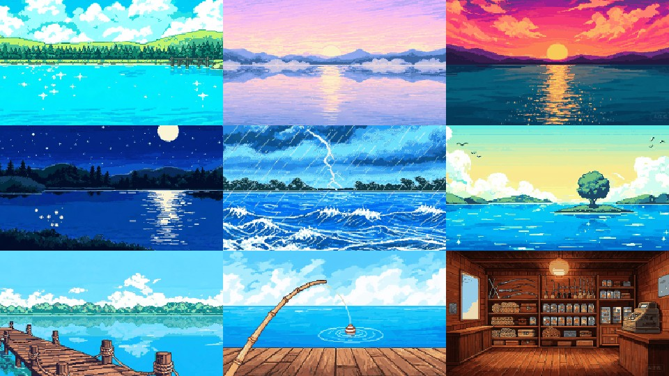
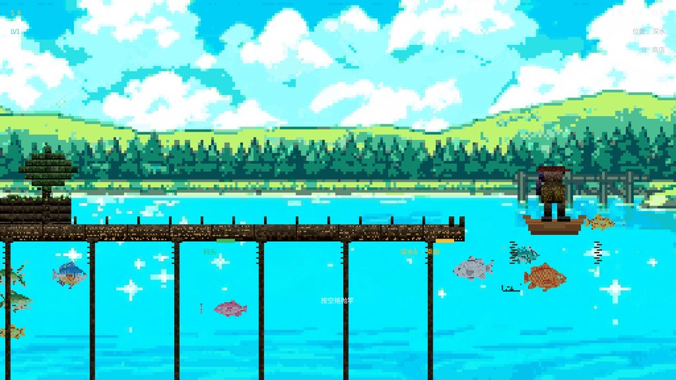
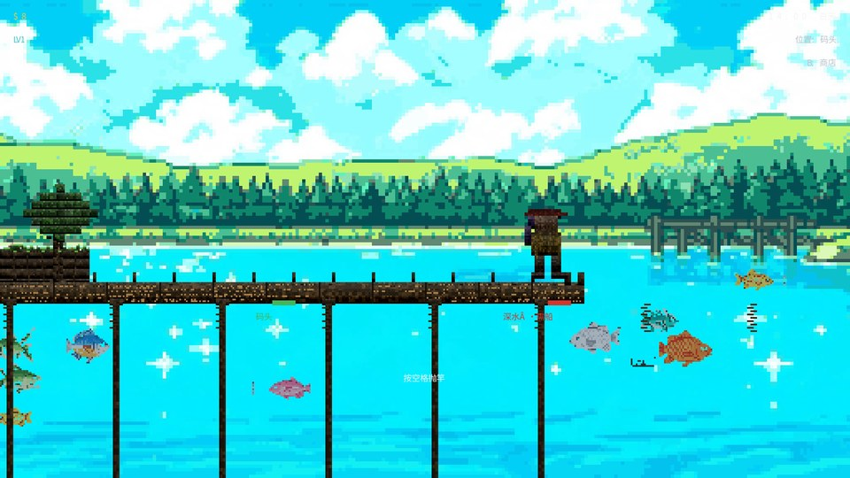
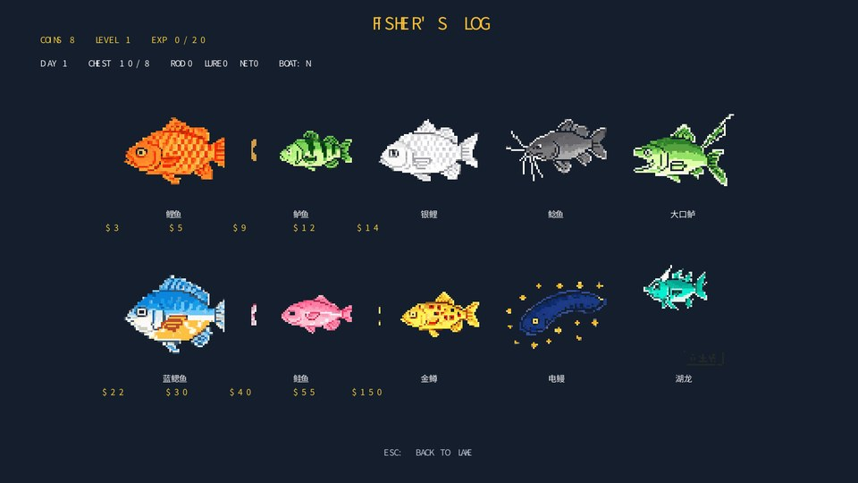
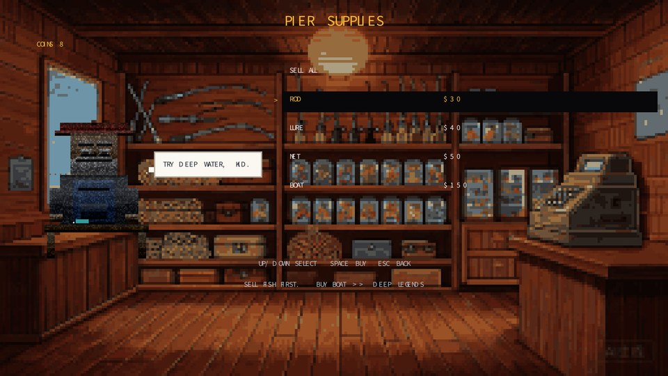
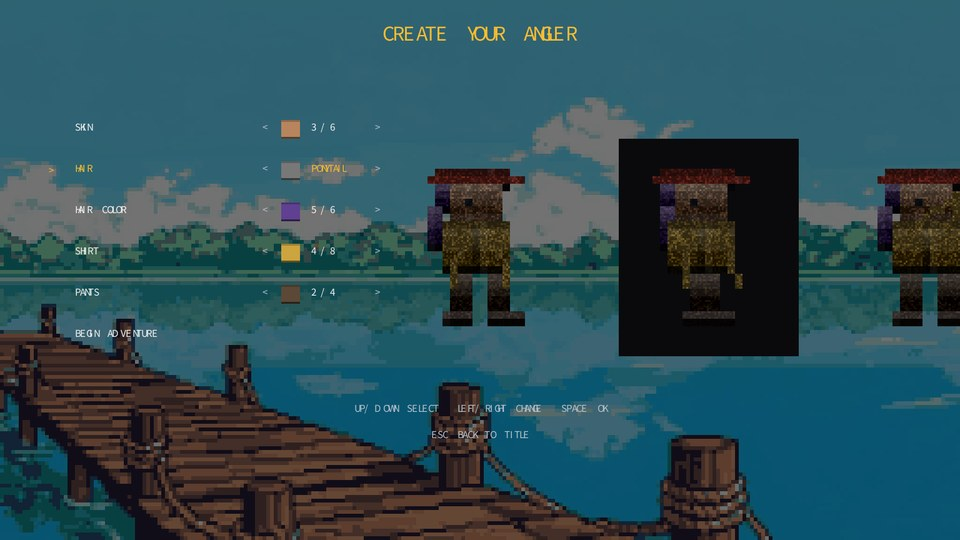
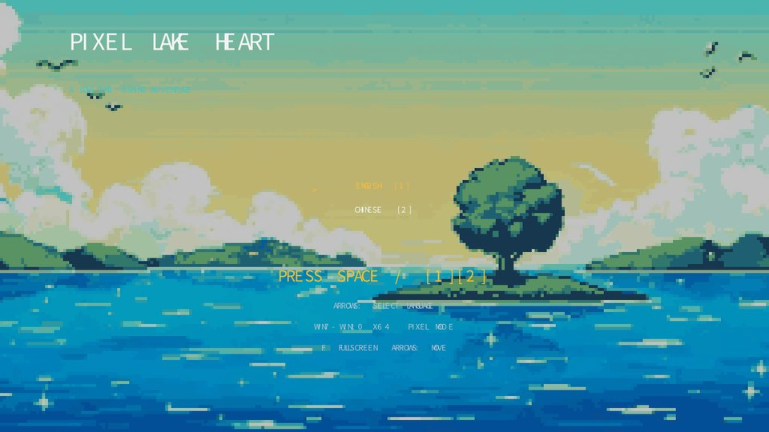

PixelLakeHeart — 游戏实时截屏
游戏引擎实际渲染输出（1536×864，逻辑 512×288 三倍整数放大）· 本次更新：全部背景图换为 16-bit 日式经典像素风（SNES JRPG 风：明亮饱和、干净锐利）
🎨 新美术风格 · 16-bit 日式经典像素（九张背景全览）
湖景四时段 + 风暴 + 标题 + 码头 + 鱼竿特写 + 商店内景，水线统一对齐逻辑坐标 y=150，动态元素（鱼/角色/浮标）与静态背景自然融合。

九张新背景总览 上排：白天/黎明/黄昏 · 中排：夜晚/风暴/标题 · 下排：码头/鱼竿/商店16-bit
⛵ 乘船出海 · 深水区（本次新玩法）
码头在画面 2/3 处结束，右侧是开阔湖面。买船（$150）后走到码头尽头自动乘船，能钓鲑鱼/金鳟/电鳗/湖龙；没船会被拦下并提示。

乘船深水区 玩家站在自己的小船上，HUD 显示"位置:深水"，标牌变金色"深水·乘船"

没船 · 码头尽头 红色"深水·需船"标牌，向右走会提示"买小船($150)才能出海去深水"
🐟 鱼类图鉴 · 十种鱼各归各位

渔夫日志（中文） 鲤鱼/鲈鱼/银鲤/鲶鱼/大口鲈/蓝鳃/鲑鱼/金鳟/电鳗/湖龙，每种颜色、轮廓各不相同图鉴

Fisherman's Log（英文） 同十种鱼，英文名图鉴
🎣 钓上鱼的画面

渔获画面 鱼的形状、鳞片、鱼鳍完整显示，不再是实心色块鱼类透明修复

渔获画面（中文） 中文提示"捕获 XX"
🌗 主场景 · 昼夜（夜晚已提亮）

白天 · 湖边码头timeH=14

黎明timeH=6.5

黄昏timeH=17.5

夜晚 · 已提亮 天空/水面/角色/水下游鱼都清晰可见，不再黑漆漆提亮修复
🪝 钓鱼流程

抛竿

等待咬钩

鱼咬钩！

收杆
🏪 商店 & 角色

商店（英文）

商店（中文）

角色行走

自定义角色
📋 标题 & 剧情

标题（英文）

标题（中文）

剧情开场（中文）